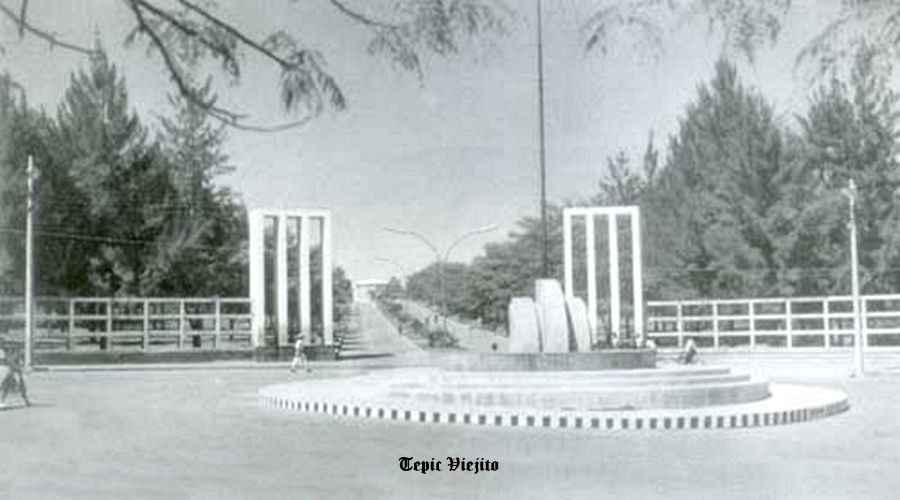
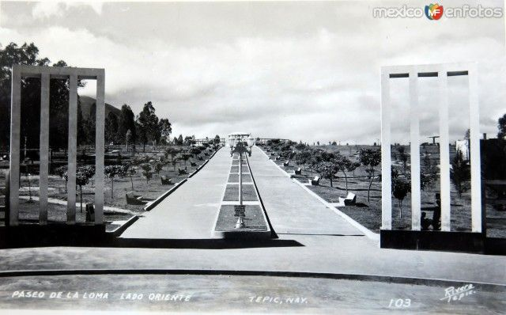
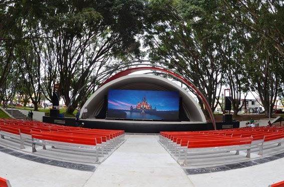

Parque la loma Tepic, Nayarit |
|  |
|
Su nombre es parque Esteban Baca Calderón, sin embargo es más conocido como “La loma” debido a que hace años se localizaba justamente en una elevación que parecía, en la parte alta de la ciudad. |
|

|
Su historia se remonta hacia el año 1810, cuando el insurgente José María Mercado, héroe nacional, acampó en este sitio. Años más tarde fue escenario de escaramuzas militares entre los conservadores y liberales; posteriormente, en 1910, se convirtió en una zona estratégica para el ejército del noroeste que tomó la Plaza de Tepic. En el siglo XIX fue utilizado como espacio para realizar eventos populares recreativos, entre ellas las tradicionales corridas de toros que se realizan durante el mes de mayo o la celebración religiosa del Apóstol Santiago el 25 de julio de cada año. |
A partir del 12 de octubre de 1892 se inició la construcción, remodelación y rehabilitación de un kiosco para hacer este parque más atractivo. Durante la gestión del gobernador Gilberto Flores Muñoz (1946-1951), se realizaron los primeros trabajos de lo que sería el Paseo de La Loma, vestigios de la calzada de las palmeras construida bajo su mandato. Se construye la concha acústica, se plantan casuarinas y eucaliptos que le dieron para la época un atractivo particular. Bajo el gobierno de Francisco García Montero (1946-1951), se construye el lienzo charro que actualmente lleva su nombre. |

|
Centro de Estudio Tecnologicos Industriales y de Servicios No.100 "Josefa Ortiz de Dominguez" |